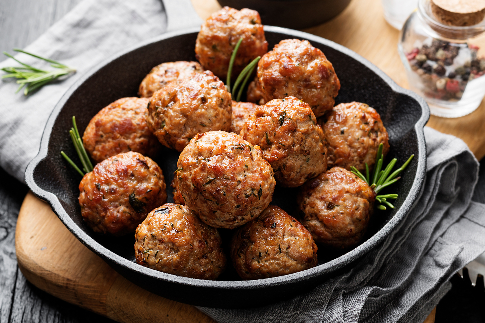

Välkommen!
Denna rubrik är lila och stor
Köttbullar
Spagetti

Ingredienser
- Hacka löken fint
- Stek löken i lite av smöret
- Blanda köttfärs, lök, salt och peppar
- forma köttfärsen till fina runda bullar
- Stek köttbullarna i resten av smöret
- Servera köttbullarna
Tack att visat intresse! Hoppas det smakar!
Jennies bästa köttbullar